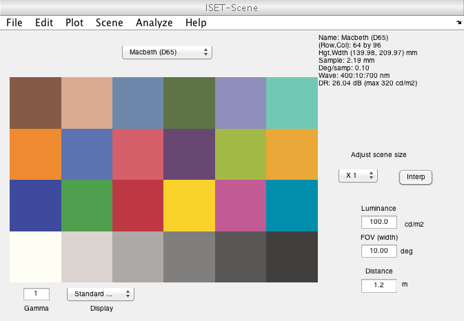
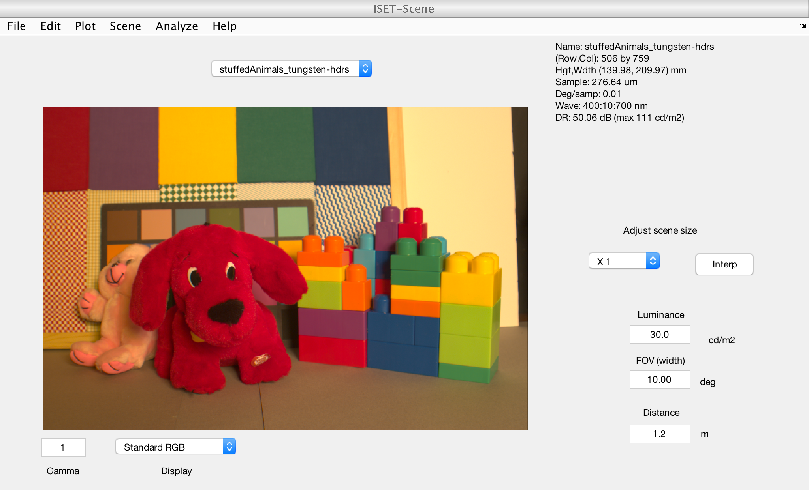
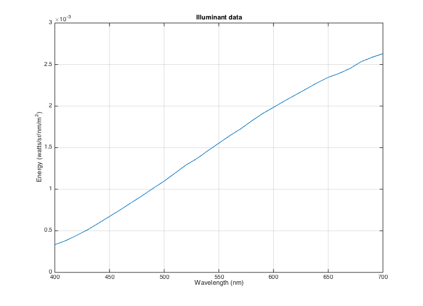
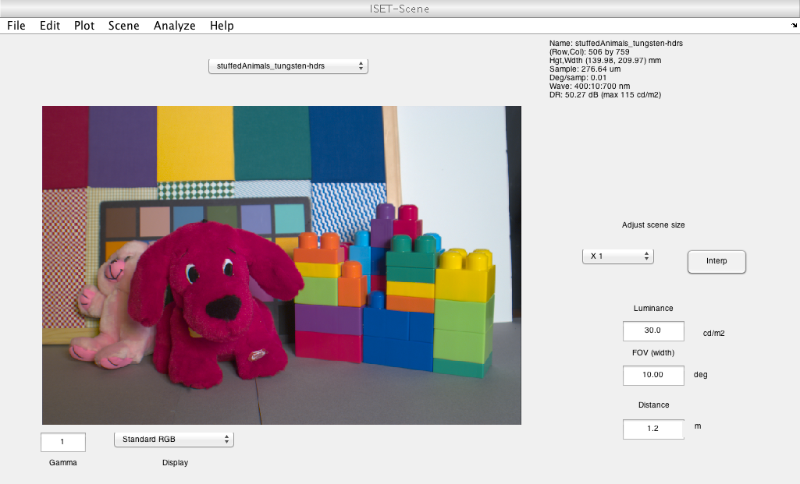

t_sceneIntroduction
An introduction to ISETBIO objects and functions: Scene
ISETBIO is structured around a few key objects that are important parts of the image acquisition pipeline. These are the scene, optical image, sensor, and image processor.
A main goal of this script is to illustrate the ISETBIO programming style. By using ISETBIO objects properly, the code and analysis are much easier to understand. The implementation of these objects was written before Matlab implemented its classes and thus doesn't rely on their organization. But many of the principles are the same.
For each object there are three fundamental operations: Create, set parameters, and get parameters.
This script introduces the first and simplest ISETBIO object: a scene. The scene describes the radiance field. For the present tutorial we work with a simple planar radiance image, such as the image on a display surface. We have some implementations for 3D scenes that should be incorporated by mid-2014.
Notes: A) Use t_TABCOMPLETION to see the list of ISETBIO tutorials
See also: t_oiIntroduction
Copyright ImagEval Consultants, LLC, 2011.
Contents
- Initializing ISET
- Create a scene and explore some of its features
- The way to interact with an object is through gets and sets.
- There are many other scene parameters you can get
- Use sceneSet to change a scene property
- Philosophical interlude - programming issues
- More about gets and sets
- Explore the relationship between parameters
- You can change the distance and horizontal field of view (hFOV)
- Specifying units
- Creating a scene from a file
- Plotting
- You can change the illumination's spectral power distribution
- ISETBIO keeps track of units
Initializing ISET
While not necessary, initialization keeps the work space clean
ieInit;
Create a scene and explore some of its features
The create function initiates the object. Typically, there are many different initial formats. For the scene, the optics including color targets, patterns, charts, and images.
% ISET sceneCreate builds a number of predefined scenes % You can see the range of possibilities by typing % help sceneCreate, or % doc sceneScreate % into the Matlab prompt. % Create a scene: Here is a simple scene of a color chart scene = sceneCreate('macbeth d65'); % To put the scene object into a window of the graphical user interface % (GUI), first we use the command ISET that adds the scene to the ISET % database: vcAddObject(scene); % Then we call the function sceneWindow which displays the object This call % opens the graphical interface and displays the current scene sceneWindow; % When the window appears, you can scale the window size and adjust the % font size as well (Edit | Change Font Size). There are many other options % in the pull down menus for cropping, transposing, and measuring scene % properties.
The way to interact with an object is through gets and sets.
For example, each object has a name and a type.
name = sceneGet(scene,'name')
name = Macbeth (D65)
There are many other scene parameters you can get
For example a scene has a horizontal field of view
hFOV = sceneGet(scene,'hfov')
hFOV =
10
Use sceneSet to change a scene property
scene = sceneSet(scene,'hfov',0.5); % In degrees of visual angle % Confirm that the set worked hFOV = sceneGet(scene,'hfov')
hFOV = 0.500000000000000
Philosophical interlude - programming issues
There are always more parameters to "get" than are to "set". This is because there are dependencies among any object parameters. For example, if you know the image distance and horizontal field of view, you can compute the spatial sample spacing.
In designing the sets/gets, the author must select an approach: Do we allow the user to set anything and then update the other parameters for consistency, or do we only allow the user to set specific parameters and through this limitation enforce consistency. ISETBIO uses the 2nd method: Only some parameters can be set.
That is why there are more gets than sets. You can get parameters that depend on the sets.
You can see the scene structure and its parameters simply by typing
scene
scene =
type: 'scene'
data: [1x1 struct]
spectrum: [1x1 struct]
name: 'Macbeth (D65)'
distance: 1.200000000000000
magnification: 1
illuminant: [1x1 struct]
wAngular: 0.500000000000000
More about gets and sets
While the objects in ISETBIO can be addressed directly - please don't. If you are ever tempted to set the objects directly, go get a cup of coffee. When you come back, you will feel like using a sceneSet
% You can see the scene parameters you can set by typing % help sceneSet % For a nicer formatting, use the Matlab doc command % For example, you might try % doc sceneGet % doc sceneSet
Explore the relationship between parameters
To see an example of the dependence, consider the effect of scene distance, which we can get, on scene sample spacing.
dist = sceneGet(scene,'distance','mm'); spacing = sceneGet(scene,'sample spacing','mm'); dist % % If we move the scene closer, and we maintain the same number of row and % column samples, the spacing changes. scene = sceneSet(scene,'distance',0.6); sceneGet(scene,'sample spacing','mm');
dist =
1200
You can change the distance and horizontal field of view (hFOV)
This will change the sample spacing as well.
scene = sceneSet(scene,'hfov',hFOV/2); sceneGet(scene,'sample spacing','mm')
ans = 0.027270812828908 0.027270812828908
Specifying units
In this example, we specified the units of the sample spacing as millimemters (mm). We could have specified microns.
sceneGet(scene,'sample spacing','um') % Or we could have specified the return in meters. sceneGet(scene,'sample spacing','m')
ans = 27.270812828907619 27.270812828907619 ans = 1.0e-04 * 0.272708128289076 0.272708128289076
Creating a scene from a file
ISETBIO includes a few multispectral scenes. These are large files, so the default distribution only includes one example. We have another 100 or so that are available.
fname = fullfile(isetRootPath,'data','images','multispectral','stuffedAnimals_tungsten-hdrs.mat'); scene = sceneFromFile(fname,'multispectral'); vcAddAndSelectObject(scene); sceneWindow;
Reading multispectral data with mcCOEF. Saved using svd method

Plotting
Many scene properties that can be plotted either from the scene Window or using scenePlot. For example, ISETBIO scenes specify a uniform illuminant by default. You can plot the illuminant in energy units by this command.
scenePlot(scene,'illuminant energy roi'); % The scenePlot command above is equivalent to % wave = sceneGet(scene,'wave'); % illuminant = sceneGet(scene,'illuminant energy'); % vcNewGraphWin; plot(wave,illuminant); grid on % xlabel('wave (nm)'); ylabel('Energy (watts/sr/nm/m^2)') 
You can change the illumination's spectral power distribution
In this case, we create a blackbody illuminant and reilluminate the scene.
bb = blackbody(sceneGet(scene,'wave'),6500,'energy'); scene = sceneAdjustIlluminant(scene,bb); vcReplaceAndSelectObject(scene); sceneWindow;
ISETBIO keeps track of units
In this case, we plot the illuminant in units of photons, rather than energy.
scenePlot(scene,'illuminant photons roi');